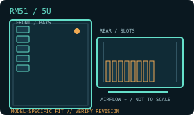

[ MODEL IDENTIFICATION // RM51 ]
SilverStone RM51 5U rackmount chassis
A 5U rack chassis with model-specific drive, PSU and expansion layouts. Match the enclosure revision, backplane and rail kit before installation.

MODEL NOTE: This record covers the RM51 only. Options, revision-dependent PSU support and installed bay modules may change fit; verify labels and the manufacturer manual before buying replacement parts.
Dimensions & fit specifications
| Rack units / external dimensions | 5U; 440 × 220 × 530 mm (W × H × D) with rear fan cage; 485 mm deep without it; 10.6 kg net. Use the applicable depth for rack planning. |
|---|---|
| Motherboard compatibility | SSI-EEB, SSI-CEB, E-ATX, ATX, Micro-ATX and Mini-ITX. |
| PSU / power compatibility | Primary bay accepts PS/2 ATX, Mini Redundant, or 2U Redundant PSU (V3.0+); the secondary PSU position accepts SFX/SFX-L and occupies a shared 3.5-inch bracket. Main PSU depth is approximately 160–190 mm depending on drive-cage arrangement; removing the cage changes that limit. |
| Drive bays / backplane | Two 3.5-inch positions (or three 2.5-inch); another pair of 3.5-inch positions share the optional SFX PSU bracket; four internal 2.5-inch positions. Drive-cage removal/PSU selection changes the usable bay count. No backplane/hot-swap support is specified for the base mounts. |
| Riser / PCIe | Eight standard-height PCI/PCIe expansion slots. Maximum GPU length is 455 mm with no front fans or radiator; retainers and width limits must be checked against card dimensions. |
| Cooling / service clearances | Two included 180 mm front fans, one rear 120 or 140 mm position, optional rear cage for two 80 mm fans; front supports up to a 360 mm radiator. Front cooling hardware reduces GPU length. Keep side/top access and rear cable paths clear for service. |
Compatibility & service notes
RM51 is a 5U chassis that can stand vertically or lie horizontally; confirm rack-ear orientation and rail kit before mounting. The SFX secondary supply shares drive space, and front radiator/fan installation changes GPU envelope. The linked manual is Chinese-language manufacturer documentation.
- Measure the complete installed depth: chassis, rack ears/slides, cable-management arm if fitted, connectors and cable bend radius.
- Maintain clear front intake and rear exhaust access; do not obstruct removable fan, drive, PSU or backplane service paths.
- Before hot-swap work, confirm the controller/backplane interface and follow the chassis manual’s power-down and ESD procedure.
Manufacturer sources
- SilverStone — RM51 product specificationsManufacturer product page for dimensions, board, drive, PSU and cooling options.
- SilverStone — RM51 installation manual v3.0 (PDF, Chinese)Manufacturer assembly documentation; language identified for readers.